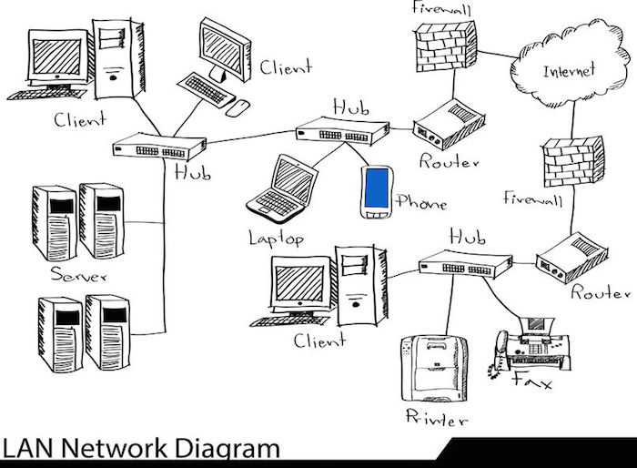
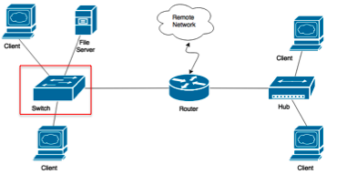
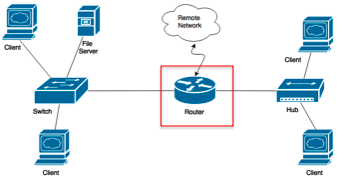
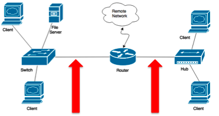
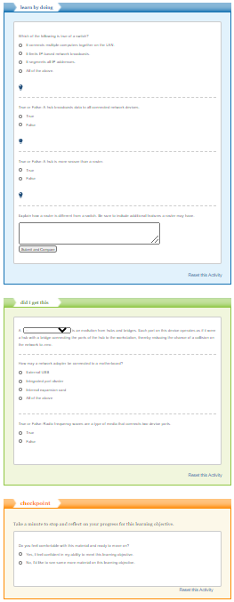

網路硬件 <<
Previous Next >> 安裝網絡適配器
網路設備
總覽
網絡設備根據其用途而有所不同。在本模塊中，我們將討論各種設備，例如集線器，交換機，路由器，網橋，網絡適配器和媒體。在討論設備時，您應注意其用途，優點和局限性。我們還將探討如何安裝網絡適配器。
樞紐
集線器是最簡單的網絡設備之一，用於將多個網絡設備和工作站相互連接，從而形成一個網絡。集線器也稱為多端口中繼器。集線器通過在一個端口中接收信號並將該信號重新廣播到其所有其他端口來工作。標準集線器沒有任何“智能”（能夠根據不同情況或要求進行更改的能力），因此我們通常將它們稱為“啞集線器”。集線器可以分為主動或被動兩種。活動集線器會在其所有端口上重複接收到的信號，並將該信號放大到最大強度。無源集線器僅重複信號而不增加任何放大。集線器是一種較舊的技術，可用於輕鬆增加可用端口的數量，但這會導致過多的網絡錯誤和衝突。集線器有較新的變體，稱為智能集線器。智能集線器實質上是具有增強功能集（例如，使用簡單網絡管理協議（SNMP））的活動集線器。
以太網集線器的三種基本類型如下：
無源集線器–重複信號而不放大
有源集線器–重複放大信號
智能集線器–具有增強功能的活動集線器（例如：SNMP）
集線器內部沒有設計固有的安全性，因為它們只是將從一個端口接收的所有信息重新廣播到另一個端口。本質上，集線器僅依賴於連接的工作站來“偵聽”其端口上的信息（如果該信息專門針對該工作站）。當信息沒有發送給它時，工作站應該只是忽略數據。但是，可以將網卡置於“混雜”模式，在該模式下，網卡將偵聽所有流量，而不管該流量指向哪個工作站。這使集線器非常不安全。
集線器的另一個缺點是它們必須共享帶寬，因為所有設備都在一個衝突域中運行。因此，如果您有一個100 Mbps的集線器，但將四個設備連接到該集線器，則每個設備將有效地以25 Mbps的速度運行。使用16端口，24端口或48端口集線器時，這可能會導致網絡流量大幅下降。

橋梁
因為集線器與所有在單個衝突域中起作用的設備一起運行，所以需要一個可以將該衝突域分解為較小單元的網絡設備，以幫助網絡更高效地運行。例如，如果一個集線器連接到另一個集線器，則它們都在單個衝突域下運行。橋用於將兩個集線器連接在一起，但仍將集線器的衝突域分開。多個網段的這種互連在一起使網絡可以擴展為大型網絡，而不會顯著降低該網絡的性能。橋比集線器更智能；實際上，他們實際上是分析進入網橋的幀中的源媒體訪問控制（MAC）地址，並根據這些地址填充內部MAC表。未來的路由決策將基於那些目標MAC地址。通過僅將信息轉發到與網絡設備關聯的根集線器，這種基於幀中目標MAC地址的智能轉發可減少網絡流量。我們將討論的網絡交換機是集線器和網橋的演進。
開關
交換機用於將多個網段連接在一起，無論它們是從交換機到交換機還是從工作站到工作站。交換機上的每個端口都充當其自己的衝突域。交換機是集線器和網橋的演進。本質上，交換機上的每個端口都好像是集線器一樣工作，並具有將集線器的端口連接到工作站的網橋，從而將網絡衝突的可能性降低到零。
交換機是智能設備，它們根據其學習到的MAC地址並放置在其MAC表中來做出轉發決策。交換機在輸入源MAC地址時會分析它們進入交換機的幀，然後用地址填充交換機的內部MAC表，以使其與交換機端口匹配。這允許交換機僅將幀轉發到單個交換機端口上的正確設備，從而提高安全性和網絡速度。
如果交換機接收到幀，但在其轉發表中沒有目標MAC地址，則它將將該幀泛洪到除源以外的所有端口上，以請求目標MAC地址的位置。交換器分解衝突域，但創建廣播域。
安全性提高了，因為無論信息卡是否處於“混雜”模式，只有信息所針對的設備才能收到副本。這在操作上類似於老式的電話接線員總機。如果信息未發送到您的端口，則您的端口將不會收到該信息。另外，由於每個端口都在其自己的衝突域中，因此網絡速度得以提高。無論網絡上有多少設備，每個交換機端口都可以全速運行，因此對於100 Mbps交換機，每個設備都以100 Mbps的速度運行。

路由器
路由器移動數據包（第3層），而交換機則移動幀（第2層）。路由器根據IP地址將網段分開，並且僅在配置時將數據包轉發出網段。這種設計可以分解由交換機創建的廣播域。由網絡專業人員決定將路由器配置為將不同的網絡連接在一起並執行智能路由決策。路由器與計算機的關係最為密切，因為它具有處理器和復雜的操作系統。路由器比較數據包源和目標的IP地址，並基於此邏輯地址（例如，IPv4和IPv6地址）將流量轉發到網絡或從網絡轉發流量。路由器通常是功能豐富的設備，並支持多種接口類型，包括非屏蔽雙絞線，光纖和同軸電纜連接。像交換機一樣，路由器上的每個端口都是一個單獨的衝突域。使用訪問控制列表，路由器可以根據端口或地址阻止對網絡的訪問。這種阻止會增加網絡的安全性。

網絡適配器
網絡適配器用於通過使用媒體將工作站連接到網絡。可以通過幾種方式將網絡適配器內置到設備的主板中：
使用集成端口集群。
通過使用內部擴展卡（PCIe，PCI或mini-PCIe）添加到工作站。
通過使用外部連接的卡，例如USB或PCMCIA。
網絡適配器有兩種主要類型：有線和無線。有線卡支持各種電纜類型，例如非屏蔽雙絞線（UTP），光纖和同軸電纜。這些各種電纜類型稱為媒體。
媒體
媒體是用於對兩個設備端口之間（例如計算機和交換機之間）的物理連接進行分類的術語。介質由銅纜，光纜或什至是射頻波（用於Wi-Fi網絡）組成。介質的成本差異很大，從無線電波的免費成本到非屏蔽雙絞線（銅纜）的價格便宜，再到光纖電纜的價格昂貴。媒體的類型確定特定網絡的帶寬速度，容量和距離限制。我們將在以後的模塊中更深入地討論媒體。


網路硬件 <<
Previous Next >> 安裝網絡適配器